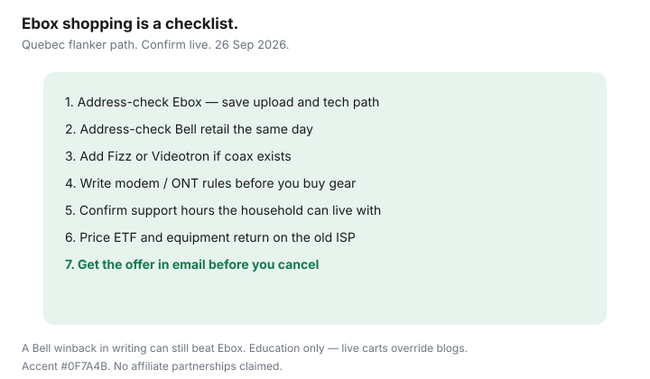

Internet · Canada
Ebox in Québec: When Bell’s Flanker Beats Shopping the Parent Brand
Ebox is one of the Québec names households skip while paying Bell retail premiums for the same last mile. Like other flankers and wholesalers, it sells a thinner retail layer on plant you already have — often Bell — with different support expectations, modem rules, and install timelines. The save is real when the address qualifies. It disappears when you need a Bell store winback or a mobility bundle credit that Ebox cannot match.
Shop Ebox beside Bell retail and independents on one sheet. Education only; verify plans and hardware at draft-time sources ~22 Sep 2026 and again before you cancel.
Disclosure: No Ebox or Bell partnership. ISP offer types only — flanker internet plans and approved modem/router gear. We may later add partner links. Live cart and address check override any blog table.
Key takeaways
- Treat Ebox as a Bell-plant flanker/reseller option in Québec — confirm technology and upload at your unit.
- Compare modem policy, support hours, and install dates, not only the monthly sticker.
- A written Bell winback can still beat Ebox if glass, mobility credits, or ETF math favour staying.
- Availability is address-specific; rural and some MDUs fail even when the borough looks covered.
- Use a Québec flanker checklist before you give notice to Bell or Videotron.
Ebox positioning in Québec vs Bell retail
Bell retail sells brand, stores, Fibe TV cross-sells, and mobility discounts. Ebox sells a lower marketing overhead product aimed at households who will self-serve online. When both light the same glass or copper path, the monthly gap is mostly retail packaging — until support or install timelines differ.
Do not assume Ebox is “always cheaper fibre.” Some addresses only get a slower wholesale tier. Some get Pure Fibre-class speeds. The checker is the product.
Plan tiers and modem policy to verify at draft
Before you switch, screenshot:
- Download / upload / latency class shown for your civic address.
- Whether a modem/router is included, rented, or must be purchased from an approved list.
- Term length, ETF schedule if any, and promo end date.
- Self-install kit versus technician appointment — and who owns the ONT on fibre.
On Bell FTTH, you typically cannot replace the ONT; you may still add your own Wi-Fi behind it. On cable wholesale paths (where offered), approved DOCSIS lists matter. Grey-market “Bell compatible” sticks are a common failure mode.

Support expectations vs parent Bell
Flankers usually mean longer chat queues, fewer stores, and less appetite for complex TV/phone bundles. That is fine for a household that can reboot a gateway and screenshot lights. It is expensive if every outage needs a bilingual phone agent and a same-day truck that only Bell retail will escalate.
WFH test: can every earner tolerate the flanker’s published support path for a two-day plant incident? If no, price Bell support as labour insurance.
When a Bell winback still beats Ebox
- Retention matches or beats the Ebox 24-month total in writing, including upload.
- You need a mobility bundle credit you will keep for the full window.
- Ebox install is weeks out and your remote work cannot wait.
- Leaving triggers an ETF that erases the flanker save — run the early-cancel math first.
Availability and install timeline quirks
Québec MDUs, plexes, and new builds fail checkers unpredictably. Order only after the unit passes. Ask whether a Bell technician must still pull fibre even when Ebox is the retailer — that calendar belongs on your move sheet. Keep a short overlap if you are leaving Videotron so you are not dark between returns.
Québec flanker shopping checklist
| Step | Done when |
|---|---|
| 1. Address check Ebox | Speed, upload, and tech path saved |
| 2. Address check Bell retail | Same unit, same day screenshots |
| 3. Quote Fizz / Videotron if coax exists | Third BATNA on the sheet |
| 4. Modem / ONT rules | Included vs buy vs bridge written down |
| 5. Support path | Hours and channel acceptable to household |
| 6. ETF + equipment return | Exit cost from current ISP known |
| 7. Written offer | Email before cancel / install booking |
Sources & date stamps
- Ebox public Québec internet pages and address tooling (verify live; used ~22 Sep 2026).
- Bell Fibe retail packaging for contrast (used ~22 Sep 2026).
- CRTC / CCTS framing for contracts and fees (re-read ~22 Sep 2026).
- Saving Optimizer: Bell Fibe winback; compare ISPs by address; switch independent checklist.
Frequently asked questions
Is Ebox the same network as Bell?
Often it rides Bell plant in Québec, but the retail contract, support, and hardware rules are Ebox’s. Confirm technology at the address — do not assume Pure Fibre everywhere Ebox advertises.
Will I keep my Bell email?
Plan to migrate. Flanker switches commonly drop @bell aliases. Move banking MFA and bill notifications before the cutover.
Can I bring my own modem on Ebox?
Only if the live plan and plant list allow it. Fibre still means a Bell-side ONT you do not replace with a cable modem. Verify before you buy hardware.
Is Ebox always cheaper than Bell?
No. Bell winbacks, mobility credits, and install timing can flip the 24-month total. Quote both the same day.
What if my condo only passes Videotron?
Then Ebox may not be an option. Use Fizz/Helix math and skip forcing a Bell-plant flanker that cannot light the suite.